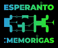

Ebligu JavaScript por
montri la lingvoelektilon.

Ni estas la Esperanto-asembleo ĉe la Ĥaosa Komunikada Kongreso. La asembleo celas esti bazejo kaj renkontiĝloko por esperanto-parolantaj kongresanoj kaj informpunkto pri la lingvo mem.
La asembleo dum 35c3 troviĝas ĉe ___. La fikslinea eventphone-telefono ĉe la asembleo estas atingebla per la nombro 3776 (ESPO).
Ĥaoso Internacia means Chaos International and is pronounced like this:
The 35c3 assembly is located at ___. The fixed-line eventphone at the assembly can be reached at the number 3776 (ESPO).
If you start learning before christmas, you'll be able to speak simple sentences at congress.
Our local mirror of "Esperanto in your pocket" is here: PDF
You need more information? Here you go.